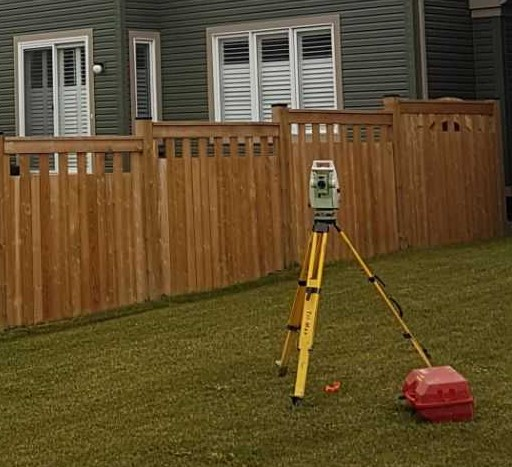

NKBM CONSULTING
Our Surveying Services
As a new company our clientel is ever expanding and growing, however, due to our small size we can only offer a limited amount of services for field surveying. While some jobs may be too big for us to accomplish on own (Currently) nothing is too difficult for us. Equiptment Malfunction? A little bit of water? Dense forest? Not too worry, we can make it work!
Current Services:
- Cadastral Surveying:
- - Please contact Katelyn for historical cadastral work
- - Please contact Brooke for new developments
- Engineering Surveying:
- - Please contact Nicholas for details and availablity
- Geodetic Surveying:
- - Our resident specialist is Miranda
Archaeological Surveying:
Due to an early winter archaeological services are suspended until spring; please contact Katelyn to set up your Stage One investigations. We apologize for any inconvenience.


